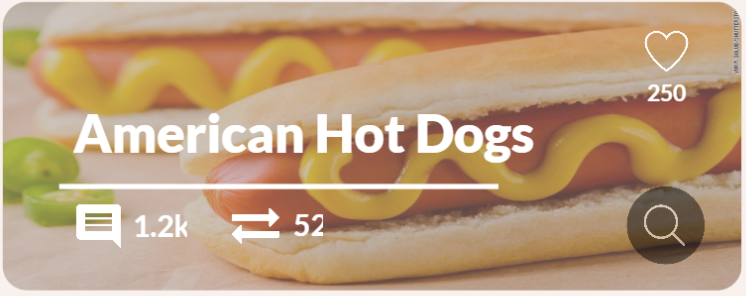

×



Claims about the invention of the hot dog are difficult to assess, as different stories assert different origin points for the distinction between hot dogs and other similar foods. The history of the dish may begin with the creation of the sausage, with the placing of the sausage on bread or a bun as finger food, with the popularization of the existing dish, or with the application of the name "hot dog" to a sausage and bun combination most commonly used with ketchup or mustard and sometimes relish.
The word "frankfurter" comes from Frankfurt, Germany, where pork sausages similar to hot dogs originated. These sausages, Frankfurter Würstchen, were known since the 13th century and given to the people on the event of imperial coronations, starting with the coronation of Maximilian II, Holy Roman Emperor as King. "Wiener" refers to Vienna, Austria, whose German name is "Wien", home to a sausage made of a mixture of pork and beef. Johann Georg Lahner, an 18th/19th century butcher from the Franconian city of Coburg, is said to have brought the Frankfurter Würstchen to Vienna, where he added beef to the mixture and simply called it Frankfurter. Nowadays, in German-speaking countries, except Austria, hot dog sausages are called Wiener or Wiener Würstchen (Würstchen means "little sausage"), in differentiation to the original pork-only mixture from Frankfurt. In Swiss German, it is called Wienerli, while in Austria the terms Frankfurter or Frankfurter Würstel are used.
What you need to make Hot Dogs
(makes 1 Servings):
1 hot dog
1 poppy seed hot dog bun
1 tablespoon yellow mustard
1 tablespoon sweet green pickle relish
1 tablespoon diced onion
4 tomato wedges
1 dill pickle
2 small pickled chillies, optional
1 pinch celery salt
How to make your Hot dog:
1. Bring a saucepan of water to a boil. Reduce heat to low then place a hot dog in water and cook 5 minutes or until done.
2. Remove hot dog and set aside. Carefully place a steamer basket into the saucepan and steam the hot dog bun 2 minutes or until warm.
3. Place hot dog in the steamed bun.
4. Pile on the toppings in this order; yellow mustard, sweet green pickle relish, onion, tomato wedges, pickle, pickled chillies and celery salt. The tomatoes should be nestled between the hot dog and the top of the bun. Place the pickle between the hot dog and the bottom of the bun.